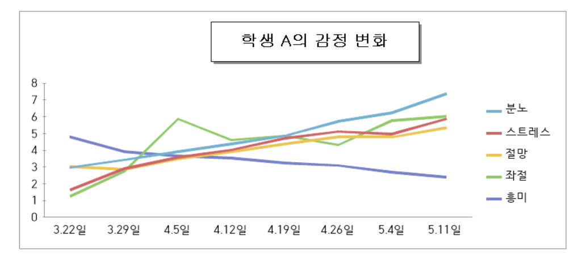
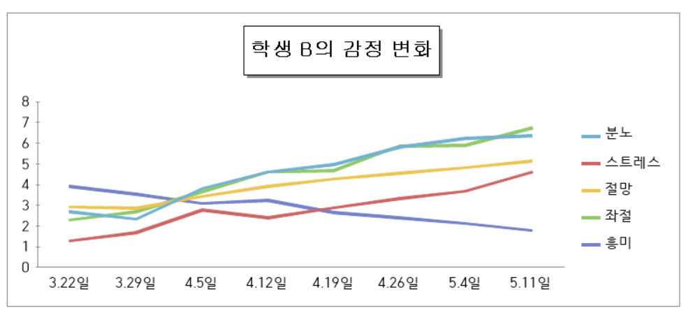

<h1>학생들의 반응<h1><br>
  <h3>실제 학생들이 CMS 코딩에서 나온 후 뇌를 영상 촬영하여 본 결과 별로 충격적이지 않는 사실을 알 수 있었다.<h3>
    <h4>학생 A(14세)를 대상으로 나온 결과이다.<h4>
      
        <h6>           (출처: www.whereisthecmscodingxfile.com)<h6>
      <h3>이것을 그래프로 나타낸다면<h3>
        
          <h6>           (출처: www.whereisthecmscodingxfile.com)<h6>
<h3>이런 모습이 될 수 있다.<h3><br><br><br>
<h2>시간이 지날수록 분노와 스트레스, 절망이 아주 가끔씩 줄어들기는 하지만 전체적으로 크게 늘어나고 또 흥미는 점점 떨어지는 것으로 나타났다.<h2><br><br>
<h3>학생 B(13세)를 대상으로 실험을 한 번 더 진행했다.<h3>

<h6>           (출처: www.whereisthecmscodingxfile.com)<h6>
<h3>또 그래프로 나타낸다면<h3>

<h6>           (출처: www.whereisthecmscodingxfile.com)<h6>
<h3>이렇게 나타났으며 결과는 학생 A와 비슷하다. 이외에 26명의 학생을 대상으로 실험을 진행했지만 결과는 달라지지 않았다.<h3>
<h2><strong>따라서 선생님의 횡포는 시간이 지날수록 심해지며 아이들의 흥미는 점점 떨어진다.<h2><strong>
<h6>다시 학생들에게 코딩선생님이 가시는 것에 대해 어떻게 생각하는지 물었더니 대다수의 학생들이 좋다 같은 긍정적인 답변을 했다.<h6>
